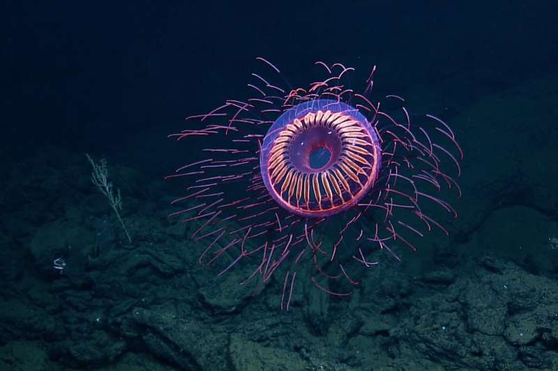
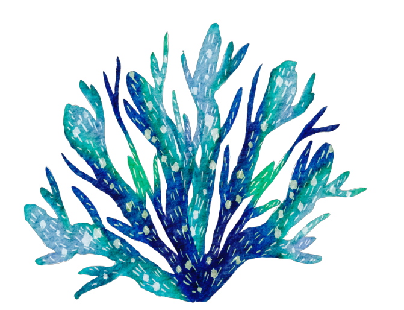

水母 Jelly Fish
水母
水母

水母
Previous
Next
性格： 水母是無脊椎動物中的一種，它們沒有中樞神
經系統和大腦，因此沒有明確的個體性格。水
母的行為主要由本能和外部刺激所驅使。水母
的主要目標是獲取食物和繁殖。它們通常以漂
浮的方式在水中移動，並隨著潮汐和水流的推
動前進。當水母感應到獵物靠近時，會展開觸
手並釋放出刺絲，以捕捉和麻痺獵物。雖然水
母沒有明確的個體性格，但有些水母可能對特
定的刺激作出反應，例如光線或觸碰。一些水
母可能會對光亮或陰影做出反應，並在受到刺
激時改變其游泳方向或速度。需要注意的是，
水母的刺絲可能具有毒性，對人類和其他動物
可能造成刺激或傷害。因此，與水母接觸時應
保持謹慎。總體而言，水母的性格是基於本能
和外部刺激的回應，它們的行為主要集中在尋
找食物和繁殖。水母對光線和觸碰等刺激可能
作出反應，但沒有明確的個體性格。
食物： 水母是肉食性生物，其食物主要包括浮游生物
、小型魚類和甲殼類等。水母通常以漂浮的方
式在水中移動，並依靠觸手上的刺絲捕捉獵物
。水母的觸手上布滿了數以千計的刺絲，這些
刺絲含有毒素。當獵物靠近時，水母會迅速釋
放刺絲，將獵物纏繞住並麻痺。然後，水母會
使用觸手將獵物拉向口部，進行消化吸收。水
母的食物來源廣泛，包括浮游生物（如浮游植
物和浮游動物）、小型魚類、甲殼類（如小型
蝦和浮游幼蟲）以及其他小型無脊椎動物。它
們以這些微小生物為食，從中獲取所需的營養
。總體而言，水母是肉食性生物，其食物主要
包括浮游生物、小型魚類和甲殼類等。它們利
用觸手上的刺絲捕捉獵物，並以這些微小生物
為食獲取營養。
外表特徵＆外觀： 水母是一種特殊的生物，其外觀特徵獨特而多
樣。水母的身體通常呈透明或半透明狀，呈現
較薄且柔軟的結構，類似於傘狀或鐘狀。它們
的主體稱為體腔，由軟膠狀物質構成，內部含
有消化、排泄和生殖器官。水母的體腔上方通
常有一個頂端中央位置的圓形或半圓形結構，
稱為傘狀頂盤。頂盤周圍擁有從中央延伸至邊
緣的突出的觸手，數量可以從數十條到數百條
不等。水母的觸手是其最顯著的特徵之一。觸
手上分佈著許多絨毛狀的小結構，稱為刺絲。
刺絲通常含有毒素，用於捕捉獵物或自衛。水
母通過攝食獵物，將其捕捉在觸手上的刺絲上
，然後將其帶入口部進行消化。水母的外觀特
徵可以因種類而有所不同，有些水母具有鮮豔
的色彩和花紋，而其他則呈現透明或淡色的外
觀。水母的大小也有很大的差異，從極小的微
小水母到巨大的海葵水母。總體而言，水母的
外觀特徵包括體腔、傘狀頂盤和觸手。觸手上
的刺絲是其最顯著的特徵之一，用於捕捉獵物
。水母的外觀特徵和顏色因種類而有所不同，
形成了多樣的外觀。

分佈＆數量：
水母廣泛分布於世界各大洋和淡水環境中，從
極地到熱帶地區都能找到它們的存在。它們具
有適應各種水域條件的能力，可以在不同的水
溫、鹽度和營養濃度下生存。水母的數量難以
確定，因為它們的數量會受到季節、水域和環
境變化的影響。一些水母種群可能會在特定季
節或特定區域中出現大量，形成所謂的「水母
漂」。這種現象可能是由於食物供應、水溫和
其他環境條件的變化引起的。隨著全球氣候變
化和人類活動的影響，一些研究表明水母的數
量和分布可能會發生變化。氣候變暖、海洋污
染和過度捕撈等因素可能導致水母種群的增加
減少。總體而言，水母廣泛分布於世界各大洋
和淡水環境中，其數量受到季節、水域和環境
條件的影響。隨著全球氣候變化和人類活動的
影響，水母的分布和數量可能會發生變化。
生活型態＆習性：
水母具有獨特的生活型態和習性。它們屬於原
生動物門，以浮游的方式在水中生活。水母的
身體主要由一個圓形或鐘形的傘狀結構組成，
稱為傘頂，下方懸掛著觸手。水母靠著透明的
傘頂浮在水中，並利用輕微的水流和肌肉的收
縮來移動。它們通常隨著海流漂移，但也能夠
進行有限的游泳。水母的觸手上有數以百計的
刺絲，這些刺絲上含有毒素。它們利用觸手捕
捉獵物，並使用刺絲麻痺獵物。然後，水母將
獵物拉向口部，進行消化吸收。大多數水母是
肉食性的，以浮游生物為主要食物來源，包括
浮游植物和浮游動物。然而，也有一些特殊種
類的水母是光合作用的，它們可以透過共生藻
類在體內進行光合作用。水母的繁殖方式多樣
，包括有性生殖和無性生殖。有些水母具有生
殖器官，可以進行性繁殖，產生卵和精子進行
受精。另外，一些水母還可以進行無性生殖，
通過分裂或芽生產生新的個體。總體而言，水
母以其獨特的浮游生活型態和特殊的捕食方式
而聞名。它們靠著浮游在水中，利用觸手捕捉
獵物，並以浮游生物為食。水母的繁殖方式多
樣，包括有性和無性生殖。
壽命：
許多海洋水母的壽命只有幾個月，而有些淡水
水母則可能只有幾天或幾週。